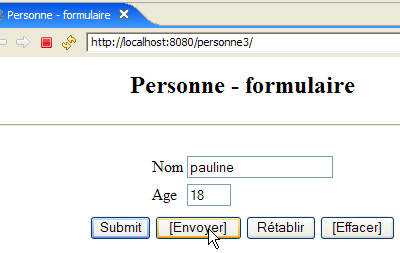

7. MVC Web 应用程序 [person] – 版本 3
[ref1]中的推荐阅读：第9章
7.1. 简介
我们建议在发送给浏览器的 HTML 页面中添加 JavaScript 代码。浏览器会执行其所显示页面中嵌入的 JavaScript 代码。该技术与 Web 服务器用于生成 HTML 文档的技术（Java/Servlet/JSP、ASP.NET、ASP、PHP、Perl、Python 等）无关。
[form.jsp]
由该页面生成的视图将如下所示：

带有文本框的按钮使用了嵌入在 HTML 页面中的 JavaScript 代码：
标签 | HTML 类型 | 功能 |
<submit> | 相当于旧版本中的 [提交] 按钮：将输入的值发送给控制器 | |
<button> | 新按钮——在将数据发送至控制器前，先在本地检查所输入数据的有效性 | |
<reset> | 将表单重置为浏览器最初接收时的状态 | |
<button> | 清除两个输入字段的内容 |
以下是一个关于如何使用 [提交] 和 [清除] 按钮的示例：
 |  |
 |  |
我们还将使用 JavaScript 代码来处理 [errors] 和 [response] 视图中的 [返回表单] 链接。让我们以 [response] 视图为例：
 | 1  |
区别在于 [1] 中显示的 URL。在之前的版本中，它是：
在此，操作已不再是 URL 的一部分，因为它将通过 POST 请求而非 GET 请求发送。这一变更意味着，无论请求的操作是什么，浏览器显示的唯一 URL 都将是 [http://localhost:8080/personne3/main]。
7.2. Eclipse 项目
要为 Web 应用程序 [/personne3] 创建 Eclipse 项目 [mvc-personne-03]，请按照第 6.2 节（第 78 页）所述的步骤复制 [mvc-personne-02] 项目。
 |  |
7.3. 配置 [personne3] Web 应用程序
/personne3 应用程序的 web.xml 文件如下：
<?xml version="1.0" encoding="UTF-8"?>
<web-app id="WebApp_ID" version="2.4"
xmlns="http://java.sun.com/xml/ns/j2ee"
xmlns:xsi="http://www.w3.org/2001/XMLSchema-instance"
xsi:schemaLocation="http://java.sun.com/xml/ns/j2ee http://java.sun.com/xml/ns/j2ee/web-app_2_4.xsd">
<display-name>mvc-personne-03</display-name>
<!-- ServletPersonne -->
<servlet>
<servlet-name>personne</servlet-name>
<servlet-class>
istia.st.servlets.personne.ServletPersonne
</servlet-class>
<init-param>
<param-name>urlReponse</param-name>
<param-value>
/WEB-INF/vues/reponse.jsp
</param-value>
</init-param>
<init-param>
<param-name>urlErreurs</param-name>
<param-value>
/WEB-INF/vues/erreurs.jsp
</param-value>
</init-param>
<init-param>
<param-name>urlFormulaire</param-name>
<param-value>
/WEB-INF/vues/formulaire.jsp
</param-value>
</init-param>
<init-param>
<param-name>lienRetourFormulaire</param-name>
<param-value>
Retour au formulaire
</param-value>
</init-param>
</servlet>
<!-- Mapping ServletPersonne-->
<servlet-mapping>
<servlet-name>personne</servlet-name>
<url-pattern>/main</url-pattern>
</servlet-mapping>
<!-- welcome files -->
<welcome-file-list>
<welcome-file>index.jsp</welcome-file>
</welcome-file-list>
</web-app>
除了一些细节外，此文件与上一版本中的文件完全相同：
- 第 6 行：Web 应用程序的显示名称已更改为 [mvc-personne-03]
已移除 [urlController] 参数。在上一版本中，该参数用于设置 [form] 视图的 POST 目标。 在新版本中，该目标将设为空字符串，即浏览器显示的 URL。我们曾说明该值始终为 [http://localhost:8080/personne3/main]，这正是 [form] 视图发起 POST 请求时所需的地址。
主页 [index.jsp] 发生如下变化：
<%@ page language="java" contentType="text/html; charset=ISO-8859-1"
pageEncoding="ISO-8859-1"%>
<!DOCTYPE HTML PUBLIC "-//W3C//DTD HTML 4.01 Transitional//EN">
<%
response.sendRedirect("/personne3/main");
%>
- 第 5 行：[index.jsp] 页面将客户端重定向到 [/personne3] 应用程序中 [ServletPersonne] 控制器的 URL。
7.4. 视图代码
7.4.1. [表单] 视图
该视图已变为如下形式：
它由以下 JSP 页面 [formulaire.jsp] 生成：
<%@ page language="java" contentType="text/html; charset=ISO-8859-1"
pageEncoding="ISO-8859-1"%>
<!DOCTYPE HTML PUBLIC "-//W3C//DTD HTML 4.01 Transitional//EN">
<%// on récupère les données du modèle
String nom = (String) session.getAttribute("nom");
String age = (String) session.getAttribute("age");
%>
<html>
<head>
<title>Personne - formulaire</title>
<script language="javascript">
// -------------------------------
function effacer(){
// on efface les champs de saisie
with(document.frmPersonne){
txtNom.value="";
txtAge.value="";
}//with
}//effacer
// -------------------------------
function envoyer(){
// vérification des paramètres avant de les envoyer
with(document.frmPersonne){
// le nom ne doit pas être vide
champs=/^\s*$/.exec(txtNom.value);
if(champs!=null){
// le nom est vide
alert("Vous devez indiquer un nom");
txtNom.value="";
txtNom.focus();
// retour à l'interface visuelle
return;
}//if
// l'âge doit être un entier positif
champs=/^\s*\d+\s*$/.exec(txtAge.value);
if(champs==null){
// l'âge est incorrect
alert("Age incorrect");
txtAge.focus();
// retour à l'interface visuelle
return;
}//if
// les paramètres sont corrects - on les envoie au serveur
submit();
}//with
}//envoyer
</script>
</head>
<body>
<center>
<h2>Personne - formulaire</h2>
<hr>
<form name="frmPersonne" method="post">
<table>
<tr>
<td>Nom</td>
<td><input name="txtNom" value="<%= nom %>" type="text" size="20"></td>
</tr>
<tr>
<td>Age</td>
<td><input name="txtAge" value="<%= age %>" type="text" size="3"></td>
</tr>
<tr>
</table>
<table>
<tr>
<td><input type="submit" value="Submit"></td>
<td><input type="button" value="[Envoyer]" onclick="envoyer()"></td>
<td><input type="reset" value="Rétablir"></td>
<td><input type="button" value="[Effacer]" onclick="effacer()"></td>
</tr>
</table>
<input type="hidden" name="action" value="validationFormulaire">
</form>
</center>
</body>
</html>
最新动态：
- 第 56 行：表单的名称为 [frmPersonne]。该名称将在 JavaScript 代码中使用。请注意 [action] 属性缺失，这意味着 [frmPersonne] 表单将提交至浏览器当前显示的 URL。
- 第 70 行：[Submit] 按钮的功能与旧版本中的 [Envoyer] 按钮相同
- 第 71 行：点击 [Envoyer] 按钮（类型为 [Button]）将执行第 24 行定义的 JavaScript 函数 [envoyer]
- 第 72 行：[Reset] 按钮的功能未发生改变
- 第 73 行：点击 [Clear] 按钮（类型为 [Button]）将执行第 16 行定义的 JavaScript 函数 [clear]
在评论 JavaScript 代码之前，让我们先回顾一些约定：
JavaScript 将显示的页面及其内容管理为一个对象树，其根节点是 [document] 对象。该文档可能包含一个或多个表单。[document.frmPersonne] 指代第 56 行定义的名为 [frmPersonne] 的表单。该表单也包含对象。 输入字段是其中的一部分。因此，[document.frmPersonne.txtName] 指代代表第 60 行定义的 HTML 输入字段的对象。[txtName] 对象具有多种属性，其中包括 [value] 属性，该属性指代输入字段的内容。因此，[document.frmPersonne.txtName.value] 指代 [txtName] 输入字段的内容。
- 第 16–22 行：JavaScript 函数 [clear] 将输入字段 [txtName, txtAge] 设置为空字符串。
- 第 24–49 行：JavaScript 函数 [submit] 在提交数据前会检查输入字段 [txtName, txtAge] 中值的有效性。它使用正则表达式来完成此操作。
- 第 28 行：检查输入字段 [txtNom] 的值是否匹配模式 /s*，即零个或多个空格。如果答案为是，则表示用户未输入姓名。如果与该模式匹配，变量 `champs` 的值将不为空指针；否则，其值为 null。
- 第 29 行：如果与模式
- 第 30 行：向用户显示一条消息
- 第 32 行：我们将 [txtName] 字段设置为空字符串（该字段可能包含一串空格）
- 第 33 行：将闪烁的光标定位在 [txtName] 字段上
- 第 34 行：函数终止。因此，输入的值不会提交至服务器。
- 第 38–45 行：对 [txtAge] 字段执行类似的操作
- 第 47 行：若到达此处，说明输入的值正确。随后我们将 [frmPersonne] 表单提交至 Web 服务器。此后流程将如同点击了标有 [Submit] 的按钮一样进行。
7.4.2. [reponse] 视图
当表单中的输入值有效时，此视图将显示这些值：
 |  |
与之前的版本相比，新功能仅在您使用 [响应] 视图中的 [返回表单] 链接时才会显示：
|  |
区别在于[1]中显示的URL。在旧版本中，它是：
这里，操作（action）不再是 URL 的一部分，因为它将通过 POST 请求而非 GET 请求发送。新的 JSP 页面 [reponse.jsp] 是 lqqqaaaaaaaaaqqAAAaaa
如下所示：
<%@ page language="java" contentType="text/html; charset=ISO-8859-1"
pageEncoding="ISO-8859-1"%>
<!DOCTYPE HTML PUBLIC "-//W3C//DTD HTML 4.01 Transitional//EN">
<%
// on récupère les données du modèle
String nom=(String)request.getAttribute("nom");
String age=(String)request.getAttribute("age");
String lienRetourFormulaire=(String)request.getAttribute("lienRetourFormulaire");
%>
<html>
<head>
<title>Personne</title>
</head>
<body>
<h2>Personne - réponse</h2>
<hr>
<table>
<tr>
<td>Nom</td>
<td><%= nom %>
</tr>
<tr>
<td>Age</td>
<td><%= age %>
</tr>
</table>
<br>
<form name="frmPersonne" method="post">
<input type="hidden" name="action" value="retourFormulaire">
</form>
<a href="javascript:document.frmPersonne.submit();">
<%= lienRetourFormulaire %>
</a>
</body>
</html>
最新动态：
- 第 35-37 行：[返回表单] 链接包含 JavaScript 代码。点击此链接将触发 [href] 属性中 JavaScript 代码的执行。正如我们在研究 [formulaire.jsp] 时所见，该代码会提交 [frmPersonne] 表单中 <input>、<select> 等字段的值。
- 第 32–34 行：定义 [frmPersonne] 表单。该表单仅包含一个类型为 <input type="hidden" ...> 的字段，即隐藏字段。该 [action] 字段用于将待执行的操作名称传递给控制器，在本例中为 [retourFormulaire]。
7.4.3. [errors] 视图
该视图用于报告表单中的输入错误。所做的修改与 [response] 视图相同：
 |  |
区别在于[1]中显示的URL。在之前的版本中，它是：
这里，操作（action）不再是 URL 的一部分，因为它将通过 POST 请求而非 GET 请求发送。新的 JSP 页面 [response.jsp] 如下所示：
<%@ page language="java" contentType="text/html; charset=ISO-8859-1"
pageEncoding="ISO-8859-1"%>
<!DOCTYPE HTML PUBLIC "-//W3C//DTD HTML 4.01 Transitional//EN">
<%@ page import="java.util.ArrayList" %>
<%
// on récupère les données du modèle
ArrayList erreurs=(ArrayList)request.getAttribute("erreurs");
String lienRetourFormulaire=(String)request.getAttribute("lienRetourFormulaire");
%>
<html>
<head>
<title>Personne</title>
</head>
<body>
<h2>Les erreurs suivantes se sont produites</h2>
<ul>
<%
for(int i=0;i<erreurs.size();i++){
out.println("<li>" + (String) erreurs.get(i) + "</li>\n");
}//for
%>
</ul>
<br>
<form name="frmPersonne" method="post">
<input type="hidden" name="action" value="retourFormulaire">
</form>
<a href="javascript:document.frmPersonne.submit();">
<%= lienRetourFormulaire %>
</a>
</body>
</html>
最新动态：
- 第30-32行：链接点击的新处理方式。关于此主题在[response.jsp]研究中提供的说明同样适用于此处。
7.5. 视图测试
要测试前面的视图，我们需要在 Eclipse 项目的 /WebContent/JSP 文件夹中复制相应的 JSP 页面：

随后，在 JSP 文件夹中，对页面进行如下修改：
[form.jsp]:
...
<%
// -- test : on crée le modèle de la page
session.setAttribute("nom","tintin");
session.setAttribute("age","30");
%>
<%// on récupère les données du modèle
String nom = (String) session.getAttribute("nom");
String age = (String) session.getAttribute("age");
%>
第 4–5 行是新增的，用于创建第 9–10 行中页面所需的模型。
[reponse.jsp]:
...
<%
// -- test : on crée le modèle de la page
request.setAttribute("nom","milou");
request.setAttribute("age","10");
request.setAttribute("lienRetourFormulaire","Retour au formulaire");
%>
<%
// on récupère les données du modèle
String nom=(String)request.getAttribute("nom");
String age=(String)request.getAttribute("age");
String lienRetourFormulaire=(String)request.getAttribute("lienRetourFormulaire");
%>
...
第 4–6 行是新增的，用于生成第 11–13 行中页面所需的模板。
[errors.jsp]:
<%
// -- test : on crée le modèle de la page
ArrayList<String> erreurs1=new ArrayList<String>();
erreurs1.add("erreur1");
erreurs1.add("erreur2");
request.setAttribute("erreurs",erreurs1);
request.setAttribute("lienRetourFormulaire","Retour au formulaire");
%>
<%
// on récupère les données du modèle
ArrayList erreurs=(ArrayList)request.getAttribute("erreurs");
String lienRetourFormulaire=(String)request.getAttribute("lienRetourFormulaire");
%>
第 4–8 行是为创建第 13–14 行中页面所需的模型而添加的。
如果尚未启动 Tomcat，请先启动，然后访问以下 URL：
 |  |
 |
我们获得了预期的浏览量。
7.6. [ServletPersonne] 控制器
[/personne3] Web 应用程序的 [ServletPersonne] 控制器将处理以下操作：
否。 | 请求 | 来源 | 处理 |
1 | [GET /person3/hand] | 用户输入的 URL | - 提交空的 [表单] |
2 | [POST /person3/main] 并携带参数 [txtName, txtAge, action=validateForm] 已发布 | 点击 [提交]按钮 [表单] | - 检查 [txtName, txtAge] 参数的值 - 若值不正确，则发送 [errors(errors)] 视图 - 如果值正确，则返回 [response(name,age)] 视图 |
3 | [POST /person3/main] 带参数 [action=returnForm] 托管 | 点击 [返回 表单] 视图 [响应] 和 [错误]。 | - 发送已预先填入最新输入值的 [表单] 视图 |
因此，我们需要处理一个新的操作：[POST /person3/main]，其中包含提交的参数 [action=returnForm]。这取代了旧的操作 [GET /person3/main?action=returnForm]。
7.6.1. 控制器骨架
控制器骨架 [ServletPersonne] 与上一版本完全相同。
最新动态：
- 第 11 行：[parameters] 数组不再包含 [urlController] 参数，该参数已从 [web.xml] 文件中移除。
[init, doValidationFormulaire] 方法保持不变。[doGet, doInit, doRetourFormulaire] 方法已略有更改。
7.6.2. [doGet] 方法
[doGet] 方法必须处理 [POST /person3/main] 操作，并处理提交的参数 [action=returnForm]：
- 第 6-9 行：处理 [POST /person3/main] 操作，并处理提交的参数 [action=returnForm]
7.6.3. [doInit] 方法
该方法处理请求 #1 [GET /person3/hand]。其代码如下：
更改之处在于，第 8 行显示的 [form] 视图的模板中不再包含 [action] 元素。
7.6.4. [doRetourFormulaire] 方法
该方法处理请求 #1 [POST /person3/main]，其提交数据中包含 [action=formSubmit]。其代码如下：
更改之处在于，第 14 行显示的 [form] 视图的模板中不再包含 [action] 元素。
7.7. 测试
将 Eclipse 项目 [personne-mvc-03] 集成到 Tomcat 中后，启动或重启 Tomcat。访问 URL [http://localhost:8080/personne3]，然后重复第 7.1 节中作为示例展示的测试。